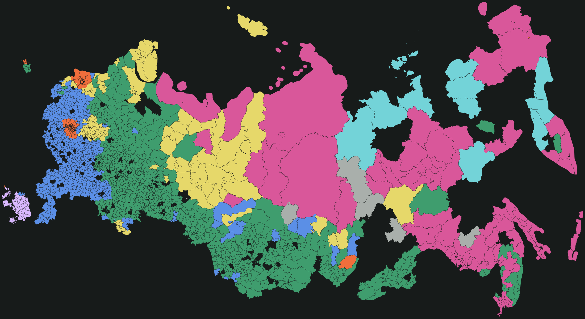
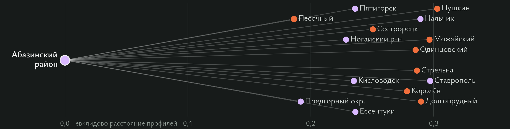
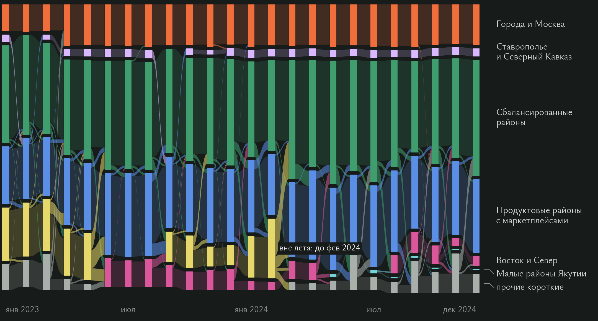
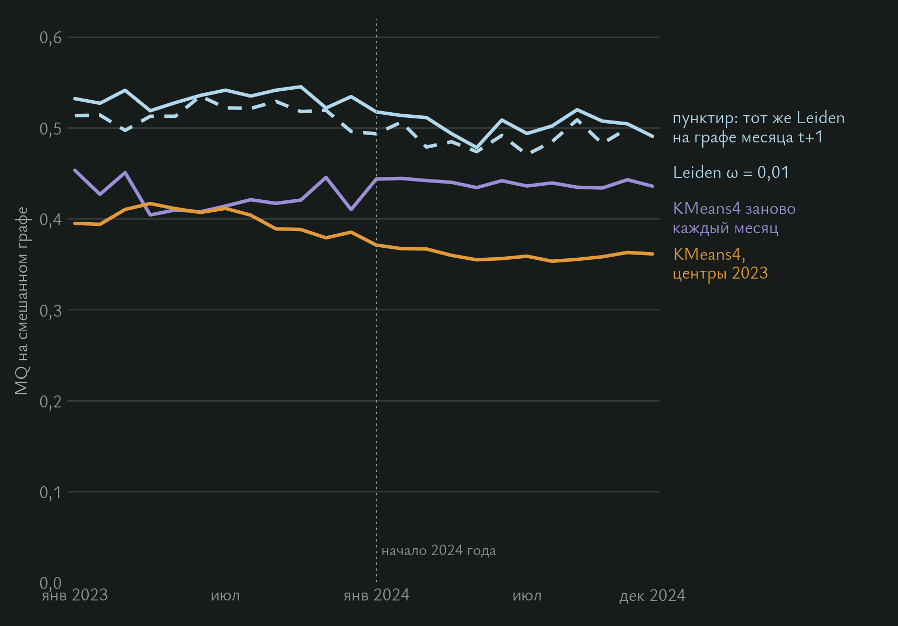
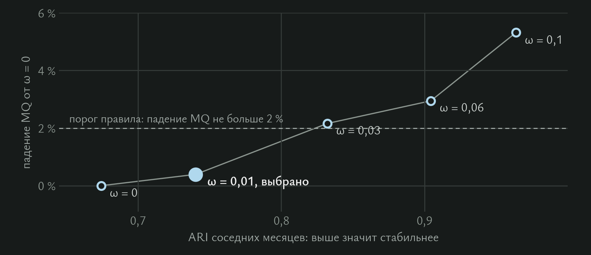
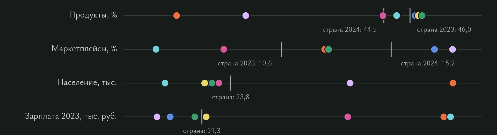

Я делю муниципалитеты на группы по структуре расходов и слежу, кто и когда переходит в другую группу за два года.

Временной Leiden на 24 помесячных графах, связь месяцев ω = 0,01. В итоге получается 7 устойчивых групп при основном seed и от 6 до 9 при двух других; 6 групп общие для всех трёх.
На графе следующего месяца сохраняется 93–94% модулярности, у фиксированных центров KMeans4 96%.
Годовой Leiden 2023 года. Правило с ограничением K ≥ 3 выбрало три группы: районы и округа (1 391), города (376), Москва и Петербург (249).
Без ограничения правило выбирает два уровня. Повторный запуск 2024 года тоже находит две группы: Москва и Петербург сливаются с городами.
Сбалансированный, продуктовый, городской сервисный и удалённый типы. Они нужны для сравнения методов и как более дробное описание по тем же признакам.
Также KMeans3, справочник типов МО и ещё 51 разбиение на общих осях. Формальное правило выбора K число 4 не подтверждает.

За два года 1 125 из 2 016 МО хотя бы раз меняют группу. Основу деления задаёт тип поселения, зарплату сверх региона и населения группы почти не объясняют (+0,006–0,009 R²).
Панель СберИндекса: 2 016 МО, 73 региона, 24 месяца. Из 2 190 территорий я убрал 174 с неполной историей.
Мне важно, на что тратят, а не сколько. Шкала 2023 года заморожена, 2024 год меряю той же линейкой.
| Правило ребра, k = 15 | Внутри региона | Жаккар с евклидом | Силуэт K=4 |
|---|---|---|---|
| Евклид профиля | 17,6% | 1 | 0,362* |
| Косинус долей | 16,5% | 0,336 | 0,333 |
| Пирсон рядов | 27,3% | 0,059 | 0,050 |
| Корреляция с лагом | 23,9% | 0,055 | 0,043 |
| DTW | 24,6% | 0,056 | 0,049 |
| Дороги | 71,7% | 0,049 | н/д |


| Средние за 24 мес., Leiden с seed 1729 | SW | MQ | MQ_next | MQ_mix | Сменили |
|---|---|---|---|---|---|
| Leiden ω = 0 | 0,099 | 0,476 | 0,441 | 0,522 | 17,7% |
| Leiden ω = 0,01 | 0,099 | 0,473 | 0,443 | 0,518 | 12,3% |
| KMeans4, центры 2023 | 0,243 | 0,520 | 0,498 | 0,380 | 5,8% |
| KMeans4 заново | 0,242 | 0,596 | 0,543 | 0,431 | 16,1% |
| Группа 2023 | МО | Население | Зарплата | Продовольствие | Общепит |
|---|---|---|---|---|---|
| Районы и округа | 1 391 | 17,9 тыс. | 45,9 тыс. | 48,1% | 1,9% |
| Города и крупные районы | 376 | 73,1 тыс. | 63,4 тыс. | 40,4% | 4,7% |
| Москва и Петербург | 249 | 77,7 тыс. | 111,3 тыс. | 33,2% | 7,6% |
Граф: 0,75 · профиль + 0,25 · совместное движение рядов. Сетка α × γ, 20 seed, итогом служит медоид. Правило выбора считает только 2023 год: устойчивость ≥ 0,8, группа ≥ 20, парето-фронт по SW и MQ на графе движения 2023 года, сумма рангов (30,75 против 30,25 у следующего варианта по усреднённым рангам summary.json). Ограничение K ≥ 3 задано в конфиге; ARI между seed в среднем 0,80, минимум 0,33. Первая версия правила считала индексы 2024 года.
Хуже KMeans3: по CH (760 против 938) и MQ на дорожном графе (0,207 против 0,302). SW и MQ 2024 года входили в первую версию правила отбора.
| Разбиение 2023, оценка на 2024 | K | SW ↑ | CH ↑ | S_Dbw ↓ | AVI на C ↑ | AVU на C ↓ | MQ на C ↑ | MQ на дорогах ↑ | ARI с прогоном 2024 ↑ |
|---|---|---|---|---|---|---|---|---|---|
| Сетевая типология (P + C) | 3 | 0,259 | 760 | 0,936 | 0,676 | 0,667 | 0,258 | 0,207 | 0,74 |
| KMeans4 (базовая линия) | 4 | 0,244 | 831 | 0,848 | 0,471 | 0,541 | 0,208 | 0,276 | 0,52 |
| KMeans3 | 3 | 0,240 | 938 | 0,945 | 0,568 | 0,667 | 0,223 | 0,302 | 0,49 |
| Спектральная на том же графе | 3 | 0,255 | 736 | 1,069 | 0,652 | 0,667 | 0,235 | 0,184 | 0,65 |
| Leiden, только профиль | 4 | 0,160 | 705 | 0,832 | 0,515 | 0,569 | 0,217 | 0,304 | 0,37 |
| Leiden, только движение рядов | 4 | 0,053 | 325 | 1,306 | 0,638 | 0,532 | 0,237 | 0,209 | 0,24 |

| ω | 0 | 0,01 | 0,03 | 0,06 | 0,1 |
|---|---|---|---|---|---|
| Средняя MQ | 0,476 | 0,474 | 0,466 | 0,462 | 0,451 |
| Падение от ω = 0 | 0% | 0,4% | 2,2% | 2,9% | 5,3% |
| ARI соседних месяцев | 0,674 | 0,740 | 0,832 | 0,904 | 0,964 |
| Сменили группу за месяц | 17,8% | 12,6% | 7,4% | 3,9% | 1,3% |
Правило ω: наибольшее ω, при котором средняя MQ падает не больше чем на 2% от ω = 0. Выбрано ω = 0,01.
| Группа во времени | МО в мес. | Продукты | Маркетплейсы | Население | Зарплата, руб. |
|---|---|---|---|---|---|
| Сбалансированные районы | 792 | 46,6% | 12,6% | 19 641 | 49 745 |
| Продуктовые районы с маркетплейсами | 548 | 46,2% | 17,0% | 18 346 | 44 624 |
| Города и Москва | 307 | 32,9% | 12,4% | 73 451 | 101 944 |
| Продуктовые районы вне лета | 351 | 46,4% | 12,6% | 17 957 | 52 131 |
| Восток и Север | 141 | 44,5% | 8,2% | 21 100 | 81 839 |
| Ставрополье и Северный Кавказ | 58 | 36,8% | 17,8% | 50 476 | 41 833 |
| Малые районы Якутии | 12 | 45,2% | 5,3% | 9 062 | 103 340 |

| Шаг | Сверка |
|---|---|
| 1–3. Зависимости, архивы, панель и 24 графа | SHA-256 архивов и панели |
| 4. Тесты | все проходят |
| 5. KMeans4 | все 2 016 меток |
| 6. Шесть правил рёбер | допуск 1e-4 |
| 7. Группы временного Leiden | по сохранённым меткам |
| 8. Сетевая типология | побайтово |
| 9. Индексы по месяцам, выбор ω | побайтово |
| 10. Сравнение 56 разбиений | побайтово |
| 11. Атлас | побайтово |
| 12. Проверка ядра без обучения | статус PASS |
Python 3.10–3.12, фиксированные seed, хеши входов в provenance.json каждого отчёта. Временной Leiden скрипт не переобучает, а читает сохранённые метки; команда переобучения есть в REPRODUCE.md, раздел 9.